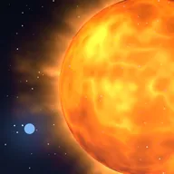
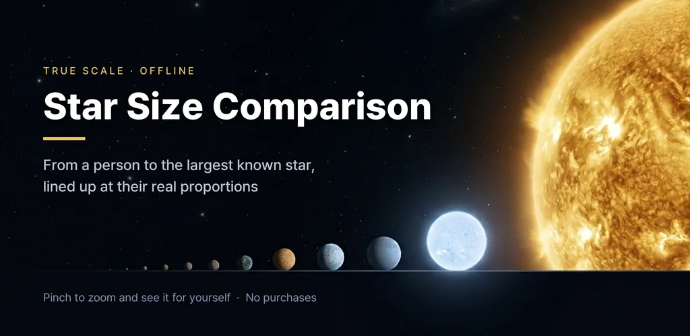
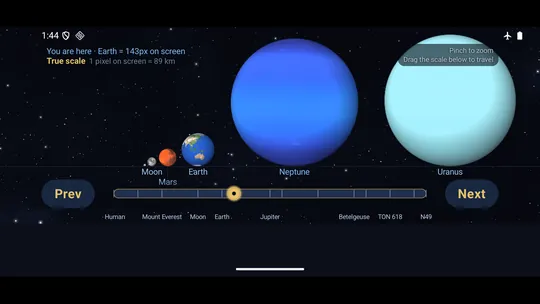
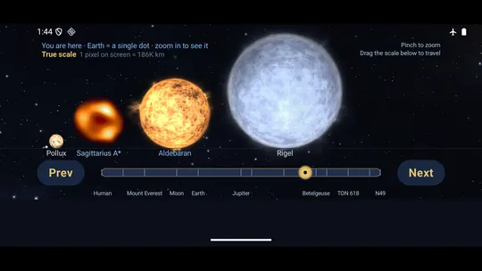
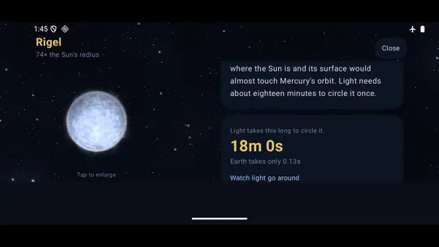
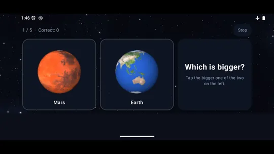
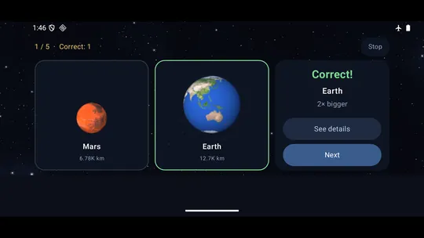
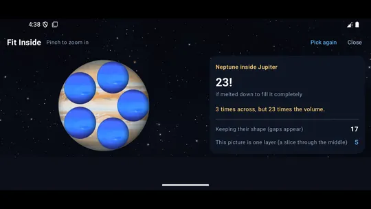

Star Size Comparison: Universe
Planet size comparison up to the largest stars. See the scale of the universe.







About this app
Earth is smaller than you think. So is the Sun, next to what comes later.
Start at human height and zoom out past Everest, the Moon, the planets and the Sun, all the way to the largest star humanity knows of. Everything is lined up side by side so you can see the difference instead of reading numbers — a planet size comparison, a star size comparison and a universe size comparison on one zoomable scale.
🪐 The size ladder — everything on one screen
A person, the Hubble Space Telescope, a Saturn V, Everest, the Moon, the planets, the Sun, Sirius, Pollux, Arcturus, Rigel, Antares, Betelgeuse, UY Scuti, VY Canis Majoris, WOH G64, Stephenson 2-18 — and beyond the stars, the black holes (Sagittarius A*, M87*, TON 618) and a supernova remnant, all arranged by size. Pinch to zoom in as far as you like.
⚖️ One scale only: the real one
There is no "squashed" view that flatters the small objects. Fit the largest star on screen and Earth is not even a dot. A "You are here" marker keeps telling you how many pixels Earth takes at your current zoom, and the slider on the right carries you across a trillion-fold range with one finger.
💡 How long light takes to circle it
Tap an object and a point of light travels once around it. Earth takes 0.13 seconds, the Sun 14.5 seconds, the biggest stars take hours. Watching the progress bar barely move says more than any number.
📊 Volume comparison and the numbers behind it
How many Suns would fit inside, plus radius, diameter, surface temperature, distance, and the source each figure comes from.
🔭 The ranking you saw on YouTube has already changed
UY Scuti was called "the largest star in the universe" for years, but recent work brought it down to about 909 solar radii. Stephenson 2-18 is still disputed, so no one can honestly call it the champion. This app writes that dispute down instead of hiding it.
🎯 Size quiz — which one is bigger?
Two objects are shown at the same size. Pick one, and they snap to their true proportions so you can see the difference. Your streak is tracked.
📅 Object of the day
A different one every day.
📷 Photographs and drawings are clearly labelled
The planets and the Sun use real imagery based on data released by NASA, ESA and ESO, and the background stars are real measurements from ESA's Hipparcos mission. Most stars, however, are far too distant for anyone to have ever photographed their surface. Those are drawn from their measured size and temperature, and the screen always says "a reconstruction, not a photograph."
Fully offline — no server, no sign-up, no login, no data collection. It works the same on a plane.
Recommended for
- Anyone who watched a star size comparison video and wanted to touch it
- Parents showing planet and star sizes to a curious kid
- Anyone who wants the current answer to "which star is the biggest", not the old one
- Anyone who loved "scale of the universe" and wants to zoom out with a finger
Android · free with ads · Developer: RealTunaLove · Store listing in 17 languages
Background story: why I built it